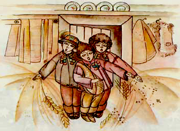

Вельми шановна українська громадо!
З Різдвом Христовим Вас віншую
Вітаю гречно, колядую,
Святошно, мило в вашу хату,
Несу я радості багато.
Найперше, здоров’я бажаю всім мати,
Аптек і лікарень ніколи не знати,
Щоб мали ви сили достатньо щоднини,
Трудитися творчо для добра України
В любові й достатку жили всі українці,
Нас більш не вбивали московські ординці,
Забули про війни усі наші люди,
Вступилися з краю московські приблуди.
З собою все сміття погане забрали,
І більш в Україну вони не вертали.
Хай Бог береже нас в страшну цю годину,
Дасть розум і вміння зберегти Україну.
Всім дружно піднятись до бою з москвою,
Відстояти землю і честь й гідність свою.
Хай Бог нам дарує родинною згоду,
У єдності жити від роду до роду,
Хай дух Українській нас всіх огортає,
Натхнення боротись Господь посилає,
Хоробрості, вміння, москву подолати,
І більше принижень від неї не знати.
Назавжди закінчилась битва кривава,
Воскресла по-справжньому наша держава,
В привітне українське рідне віконце,
Всміхнулось нарешті всім радісно сонце.
Відкрились для праці новітні заводи,
На нашому полі дійшли рясні сходи,
Багатим врожаєм ми світ дивували,
І бід, безробіття вже більше не знали.
Не гнала недоля нас в різні країни,
Що знищив нам ворог, підняти з руїни,
До рідної хати вернулись лелеки,
З країн закордонних, сусідніх й далеких.
У рідному краї гніздечка всі звили,
І більш по чужинах нігде не блудили,
На диво і заздрість усім ворогам,
У рідній країні звели щастя храм.
Хай мир запанує в країні усюди,
Збоїв переможних повернуться люди.
І стануть величчю нам гімн всі співати,
Що нас українців москві не здолати.
Хай радість і щастя вам Бог посилає,
Прожити 100 років, Усім Вам Бажаю.
Христос Рождається!
Славімо Його!
Богдан Савка
Січень 2015
м. Копичинці